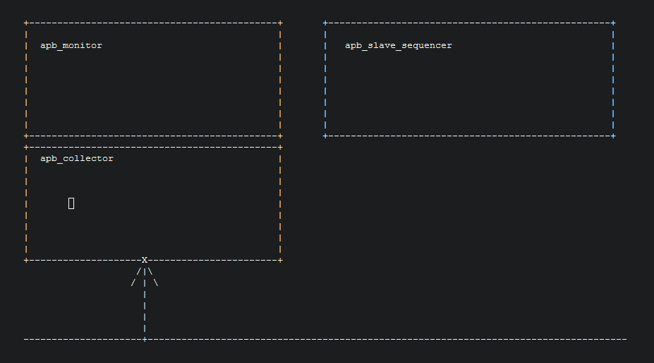

uvm_ref_flow_1.2是不错的学习材料，从UT到SOC的环境都可以参考这里面的代码来写，至少可以当做代码的模板来用。
和我之前一般看到的做法不同，monitor被完全实现在了transaction level，signal level的东西放在了一个叫collector的class里面。
还有一个特别值得说明是，在apb_slave_seq_lib.sv中的simple_response_seq通过其p_sequencer的tlm接口addr_trans_port来生成包，不错的应用方法。
class simple_response_seq extends uvm_sequence #(apb_transfer);
// ...
virtual task body();
`uvm_info(get_type_name(), "Starting...", UVM_MEDIUM)
forever begin
p_sequencer.addr_trans_port.peek(util_transfer);
// ...
end
endtask : body
endclass : simple_response_seq
为了让sequencer能看到发包的情况，建立了一条tlm通道。从总线到apb_collector，再到apb_monitor，最后到apb_slave_sequencer。
用事件来在同一个class的两个task之间做同步和信息传递，用peek的tlm通路来层层传递。
class apb_slave_sequencer extends uvm_sequencer #(apb_transfer);
// ...
uvm_blocking_peek_port#(apb_transfer) addr_trans_port;
// ...
endclass : apb_slave_sequencer
class apb_monitor extends uvm_monitor;
// ...
// Allows the sequencer to look at monitored data for responses
uvm_blocking_peek_imp#(apb_transfer,apb_monitor) addr_trans_export;
// Allows monitor to look at collector for address information
uvm_blocking_peek_port#(apb_transfer) addr_trans_port;
event trans_addr_grabbed;
endclass : apb_monitor
// UVM run_phase
task apb_monitor::run_phase(uvm_phase phase);
forever begin
addr_trans_port.peek(trans_collected);
`uvm_info(get_type_name(), $sformatf("Address Phase Complete: %h[%s]", trans_collected.addr, trans_collected.direction.name() ), UVM_HIGH)
-> trans_addr_grabbed;
end
endtask : run_phase
// FUNCTION: peek - Allows the sequencer to peek at monitor for responses
task apb_monitor::peek(output apb_transfer trans);
@trans_addr_grabbed;
trans = trans_collected;
endtask : peek
class apb_collector extends uvm_component;
// ...
// TLM Port - Allows sequencer access to transfer during address phase
uvm_blocking_peek_imp#(apb_transfer,apb_collector) addr_trans_export;
event addr_trans_grabbed;
endclass : apb_collector
// UVM run_phase()
task apb_collector::run_phase(uvm_phase phase);
@(posedge vif.preset);
`uvm_info(get_type_name(), "Detected Reset Done", UVM_LOW)
collect_transactions();
endtask : run_phase
// collect_transactions
task apb_collector::collect_transactions();
forever begin
@(posedge vif.pclock iff (vif.psel != 0));
void'(this.begin_tr(trans_collected,"APB_COLLECTOR","UVM Debug","APB collector transaction inside collect_transactions()"));
trans_collected.addr = vif.paddr;
trans_collected.master = cfg.master_config.name;
trans_collected.slave = cfg.get_slave_name_by_addr(trans_collected.addr);
case (vif.prwd)
1'b0 : trans_collected.direction = APB_READ;
1'b1 : trans_collected.direction = APB_WRITE;
endcase
@(posedge vif.pclock);
if(trans_collected.direction == APB_READ)
trans_collected.data = vif.prdata;
if (trans_collected.direction == APB_WRITE)
trans_collected.data = vif.pwdata;
-> addr_trans_grabbed;
@(posedge vif.pclock);
if(trans_collected.direction == APB_READ) begin
if(vif.pready != 1'b1)
@(posedge vif.pclock);
trans_collected.data = vif.prdata;
end
this.end_tr(trans_collected);
item_collected_port.write(trans_collected);
`uvm_info(get_type_name(), $sformatf("Transfer collected :\n%s",
trans_collected.sprint()), UVM_MEDIUM)
`ifdef HEAP
runq.push_back(trans_collected);
`endif
num_transactions++;
end
endtask : collect_transactions
task apb_collector::peek(output apb_transfer trans);
@addr_trans_grabbed;
trans = trans_collected;
endtask : peek
再看一下连接关系。
// UVM connect_phase
function void apb_env::connect_phase(uvm_phase phase);
super.connect_phase(phase);
// Get the virtual interface if set via get_config
if (!uvm_config_db#(virtual apb_if)::get(this, "", "vif", vif))
`uvm_error("NOVIF",{"virtual interface must be set for: ",get_full_name(),".vif"})
bus_collector.item_collected_port.connect(bus_monitor.coll_mon_port);
bus_monitor.addr_trans_port.connect(bus_collector.addr_trans_export);
master.monitor = bus_monitor;
master.collector = bus_collector;
foreach(slaves[i]) begin
slaves[i].monitor = bus_monitor;
slaves[i].collector = bus_collector;
if (slaves[i].is_active == UVM_ACTIVE)
slaves[i].sequencer.addr_trans_port.connect(bus_monitor.addr_trans_export);
end
endfunction : connect_phase